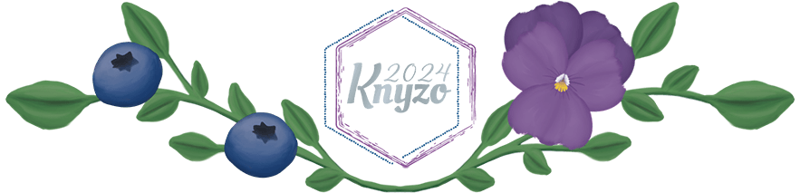
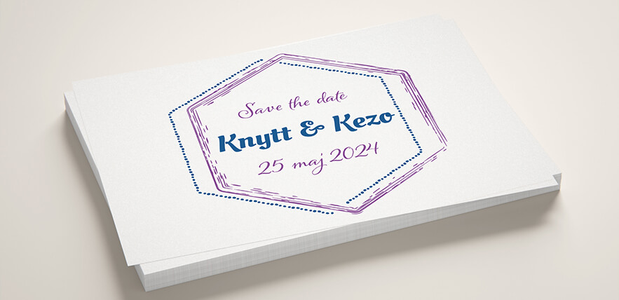
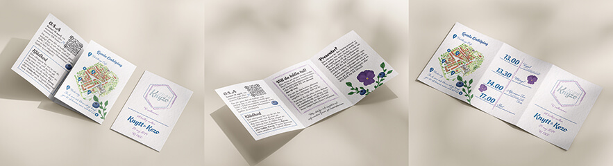
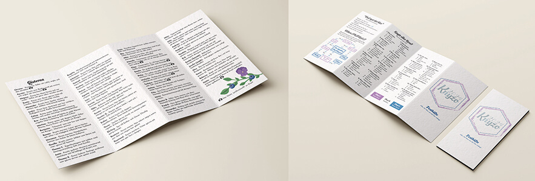
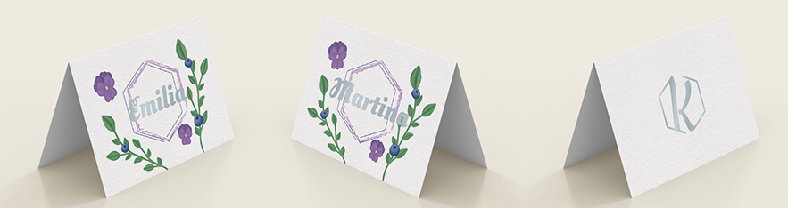
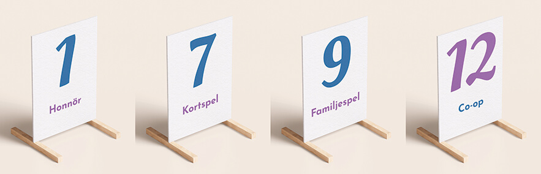
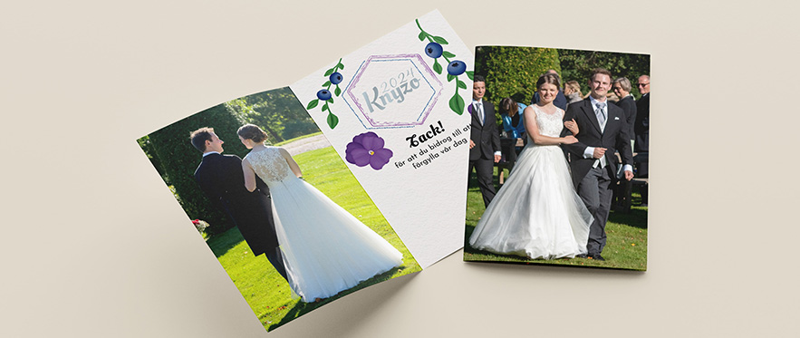
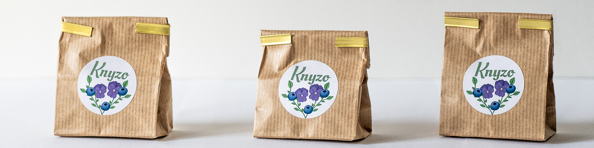

Bröllopsfotograf i Östergötland

När ni planerar ert bröllop kan det vara lätt att glömma bort de mindre detaljerna, som olika typer av trycksaker. Dock är ju trycksakerna något av det viktigaste att få till, för hur skulle det se ut om ni glömde platsen för bröllopet på inbjudningarna? Eller datumet? Jag hjälper er med allt från Save the date och inbjudan till tackkort, och allt däremellan. För att jag ska hinna skapa ert material i tid bör ni höra av er i god tid innan ni behöver de första trycksakerna.
För att få en enhetlig look på alla era trycksaker, där gästerna genast känner igen att det är just ert bröllop det handlar om, kan jag ta fram en ordbild/logga baserad på era namn eller initialer. Jag kan också skapa andra designelement utifrån temat för ert bröllop.
Save the date-korten kan, och bör, designas och skickas ut till era gäster i princip så fort ni har bokat ert datum. Ni väljer själva om ni enbart vill ha med datumet eller om ni också vill meddela till exempel platsen för bröllopet (kan vara bra om ni vet att gäster kan behöva planera resa och boende).
Den officiella inbjudan brukar skickas ut några månader innan bröllopet. Här är det viktigt att få med all information som gästerna kan behöva inför den stora dagen. Om ni har tänkt ha en bröllopshemsida där all information finns samlad kan ni komma undan med att skippa viss information i inbjudan, men det är värt att tänka på att alla gäster kanske inte är lika bekväma med att använda internet. Jag hjälper er självklart så ni får med den viktigaste informationen i inbjudningarna. En personlig favorit är att ha med ett övergripande schema över bröllopsdagen så man vet vad man kan förvänta sig, och hur mycket tid man har på sig om man behöver förflytta sig.
Festhäftet är en väldigt fri och rolig trycksak att ha med. Beroende på hur er fest ser ut kan festhäftet mestadels vara underhållning för era gäster.
En väldigt enkel trycksak som kan vara så detaljerad som man känner för, men som egentligen kan vara enbart ett namn. Det viktiga är att era gäster kan hitta sina platser.
Skyltar för bordsnumrering är inte alltid viktigt att ha, men det kan underlätta för era gäster att hitta sina bord, och underlätta för toastmasters om ni vill att man tar mat bord för bord.
Det är standard att i alla fall skicka ut tackkort till alla som gett bröllopsgåvor, men jag tycker det är att föredra att skicka tackkort till alla som kommit, för man är väl ändå tacksam att få dela sin bröllopsdag med sina gäster? Själva designen på tackkorten kan man göra på många olika sätt, men jag tycker det är väldigt trevligt att använda bilder från fotograferingen. Här valde jag att använda två bilder, en framifrån och en bakifrån, för att ge känslan av att man “vänder” på bilden när man öppnar kortet.
I alla paket ingår en enklare ordbild, baserad på initialer, & enstaka enkla designelement samt kontakt med tryckeri (kostnad för trycket tillkommer)
I alla +paket ingår en mer avancerad ordbild & flertalet designelement samt kontakt med tryckeri (kostnad för trycket tillkommer)
Jag älskar när brudpar sätter sin egen prägel på sitt bröllop och verkligen får sina personligheter att lysa igenom. Om ni har behov av någon annan trycksak som inte finns listad här så hjälper jag er därför gärna att hitta en lösning. Hör av er med så mycket detaljer som möjligt så återkommer jag med vad det skulle kunna tänkas kosta.
En gästgåva är absolut inget måste, men något litet kan vara roligt att ge. Beroende på vad gåvan är kan det också vara kul att sätta sin egen prägel på den med en gravyr eller en etikett. Till mitt eget bröllop tog vi fram en egen teblandning som serverades under festen, och vi gav varje gäst en liten påse av téet som gåva. Jag designade en etikett baserat på vår ordbild och smakerna på téet. Designelementen återanvändes också i de övriga trycksakerna.
Vill ni anlita mig för design av trycksakerna till ert bröllop, eller har ni några frågor? Tveka inte att kontakta mig.
brollop@weareknytt.com